Introduction
Introduction
- Our BlueSMiRF product line is a series of wireless Bluetooth® serial links. The SparkFun BlueSMiRF v2 is a reboot of the previous BlueSMiRF board, utilizing the Espressif's ESP32 Pico Mini for wireless communication and comes in several variants, with PTH pads, male header pins, or a JST connector. These boards operate as a serial data link and are a great replacement for hardwired between boards. Simply connect a BlueSMiRF v2, pair the devices over Bluetooth®, and simultaneously transmit and receive data! Any serial stream from 2400 - 921600bps can be passed between two devices; with a range of 100' (33m). In this tutorial, we'll go over the hardware and the connections to a BlueSMiRF v2. We will also provide a few examples; including, how to connect to the BlueSMiRF v2 with a smartphone and a basic Arduino example transmitting data between two BlueSMiRF v2s... so let's get started!
Variants
Section Topics
This guide is divided into several sections:
- The Quickstart Guide assumes a working knowledge of the BlueSMiRF v2 and the required software to configure it for your project's needs. It only covers basic hardware information and assembly instructions users would need to get started with this product.
- The Hardware section has two sub-sections that provide:
- An overview of the board's design, major components, and interfaces. Refer to this page for information on the connectors, breakout pins, and jumpers.
- Assembly instructions for this product's interface.
- The Operation section has two sub-sections that discuss the device operation and configuration settings.
- The Firmware section has two sub-sections covering the open-source firmware and its dependencies; including instructions for updating the firmware on the device.
- The Examples section includes multiple demonstrations of the product's capabilities.
- To follow along with the examples in this tutorial, users will require the specified products.
- In the Resources and Support section, users can find the design files (KiCad files & schematic), relevant documentation (datasheets, white papers, etc.) and other helpful links on the Resources page.
- The Troubleshooting page includes helpful tips and instructions for how to receive technical support from SparkFun.
Revision History
The Original BlueSMiRF
Back in April 2005, we released the original BlueSMiRF (Bluetooth Serial Miniature RF) Link, which featured BlueRadio's WML-C40AH Bluetooth modems. It was released in two variants that came with either a 4-pin header on the basic BlueSMiRF or a 6-pin header on the extended BlueSMiRF, using the following pin configuration (CTS)/PWR/GND/TX-O/RX-I/(RTS).

Basic BlueSMiRF

Extended BlueSMiRF
Silver, Gold, and Mate
Eventually, the Bluetooth modems manufactured by BlueRadio were discontinued and we transitioned to the RN-41 and RN-42 modules from Roving Network.
Gold/Silver Variants
The primary difference between the RN-41 and RN-42 modules was their range/transmit power. The BlueSMiRF Gold featured the RN-41, a class 1 Bluetooth module that had a range of 100m, but utilized more power. Meanwhile, the BlueSMiRF Silver featured the RN-42, a class 2 module with lower power consumption and a range limited to 10m.

BlueSMiRF Gold (RN-41)

BlueSMiRF Silver (RN-42)
Mate Header
With this revision, we also settled on a 6-pin layout to breakout the flow control pins of the serial interface. Additionally, in response to the growing popularity of miniaturized development boards, like the Arduino Pro and Pro Mini, we introduced a new variant with a compatible pin layout. The BlueSMiRF Mate variants had a pin layout ( GND/CTS/VCC/TXO/RXI/RTS) that matched the USB-to-Serial adapters that were used to program and interface with the development boards. This allowed users to easily extend the capabilities of their board with the BlueSMiRF Mate.

A comparison of the pin layouts between the Bluetooth Mate and regular BlueSMiRF

BlueSMiRF Mate connected to the headers for the serial programming interface of the Arduino Pro.
The Next Generation (v2)
Just as the Bluetooth modems from BlueRadio were discontinued, production of the modules from Roving Network also ceased and in 2021 we sold the last of the BlueSMiRF Gold and Silver. Fast forward to January 2024 and the BlueSMiRF has arisen once more! The new BlueSMiRFs v2 features a few upgrades:
- Features an ESP32-PICO-MINI-02 module programmed with our open-source firmware
- Easily update the firmware Over-the-Air or through the serial interface
- Remotely configure the settings with a simple AT-command set
- We have three variants with different connections to simplify hooking up the BlueSMiRF to your project
- The PTH pad and male header variants have fully, adopted the pin layout from the Bluetooth Mate
RTS/RXI/TXO/VCC/CTS/GND- Pin labels are now provided on both sides of the board
- On the JST variant, the pin layout and JST connector matches the serial radios
- The PTH pad and male header variants have fully, adopted the pin layout from the Bluetooth Mate
- A user button has been added to simplify pairing, triggering various modes of operation, and resetting the factory defaults
- Upgraded the voltage regulator to the APA2112K 3.3V, 600mA for increased performance

BlueSMiRF v2 Replacing Serial Connection on the Arduino Pro Mini 3.3V Serial Header Port
BlueSMiRF v2 Replacing Serial Connection on the Arduino Pro Mini 3.3V Serial Header Port
Hardware Overview
What's New?
The design of the BlueSMiRF is similar to previous generations. However, we have made a few design improvements that users will appreciate. In testing, we got about ~110 feet (~33m) of range from a pair of BlueSMiRF v2s in the SparkFun building.
- Features an ESP32-PICO-MINI-02 module programmed with our open-source firmware
- Easily update the firmware Over-the-Air or through the serial interface
- Configure the settings with AT-commands
- A user button has been added to simplify pairing, triggering various modes of operation, and resetting the factory defaults
- We manufacture three variants, with different connections to simplify hooking up the BlueSMiRF to your project
- PTH pad and male header variants, which now have pin labels on both sides of the boards
- JST variant that is easily connected to our high-precision GNSS breakout boards
Info
For a full background on the development and design revisions of the BlueSMiRF, check out the Board Revision History page of this guide.
Board Layout
The SparkFun BlueSMiRF v2 features the following:

The primary features of the BlueSMiRF v2 boards.

The connection options for the BlueSMiRF v2: (from left; to right)
PTH pads, male header pins, or JST-GH connector
-
- ESP32 Module
- Espressif's ESP32-PICO-MINI-02 module
-
- PAIR Button
- A multi-use button that changes between the various modes of operation.
-
- Status LEDs
- The green
CONNECTand redSTATUSLEDs are used to indicate various modes of operation.
-
- Hardware Connection
- This connection breaks out the pins for the UART interface and power supply for the BlueSMiRF. Additionally, the three variants provide different options for connecting the BlueSMiRF to their project.
-
Design Files
- Schematics
- KiCad Files
- Board Dimensions
- PTH Pads:
- 1.50" x 0.60" (38.1mm x 15.2mm)
- Male Header:
- 1.74" x 0.60" (44.2mm x 15.2mm)
- JST Connector:
- 1.60" x 0.60" (40.8mm x 15.2mm)
- PTH Pads:
- STEP Files
-
How-to Manipulate 3D Model
Controls Mouse Touchscreen Zoom Scroll Wheel 2-Finger Pinch Rotate Left-Click & Drag 1-Finger Drag Move/Translate Right-Click & Drag 2-Finger Drag
Board Dimensions

Dimensions of the BlueSMiRF v2 - PTH.

Dimensions of the BlueSMiRF v2 - Header.

Dimensions of the BlueSMiRF v2 - JST.
Need More Dimensions?
For more board dimensions, users can download the KiCad files for these board. These files can be opened in KiCad and measurements can be made with the measuring tool.
KiCad - Free Download!
KiCad is free, open-source CAD program for electronics. Click on the button below to download their software. (*Users can find out more information about KiCad from their website.)
Measuring Tool
This video demonstrates how to utilize the dimensions tool in KiCad, to include additional measurements:
ESP32 Pico-Mini
The brains of the BlueSMiRF v2 is an ESP32 Pico-Mini module. The Espressif series of ESP32 modules are a versatile, compact MCU modules with WiFi, BT, and BLE capabilities that target a wide variety of applications. At the core of the ESP32 Pico-Mini module is the ESP32-PICO-V3-02, a System-in-Package device, along with an integrated 8 MB SPI flash, 2 MB SPI PSRAM, and 40 MHz oscillator. While the ESP32 Pico-Mini module has twenty-seven multifunctional GPIO that are available, only seven of I/O pins are actually utilized on the BlueSMiRF v2.

The ESP32 PICO-MINI-02 module on the BlueSMiRF v2.
Note
The ESP32 module can get a little warm when operating; don't be alarmed, this is just heat dissipating from the internal components.
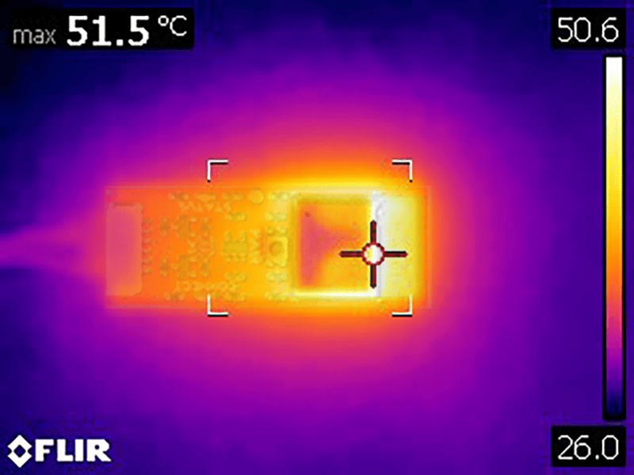

General Features
Features
- Electrical Characteristics:
- Operating Voltage: 3.0 - 3.6V
- Current Consumption:
- RF Operation: 368mA (peak)
- Normal Operation: 20-31mA
- Light-Sleep: 0.8mA
- Deep-Sleep: 5µA
- Xtensa® Dual-Core 32-bit LX6 Microprocessor (up to 240MHz)
- 448KB of ROM and 520KB SRAM
- 8MB SPI Flash
- 2MB PSRAM
- 16KB SRAM in RTC
- Operating Temperature: -40 to 85°C
- PCB antenna
- WiF 802.11b/g/n
- Bit Rate: up to 150Mbps (802.11n)
- Frequency Range: 2412 - 2484MHz
- Bluetooth
- Bluetooth v4.2 Specification:
- BR/EDR
- Bluetooth LE
- Transmitter Class: 1, 2, and 3
- Bluetooth v4.2 Specification:
- 27 GPIO (including strapping pins)
- Other Supported Peripherals:
- SD card, SDIO, I2S, IR, pulse counter, TWAI/CAN, Ethernet MAC
With the pin multiplexing capabilities of the ESP32 SoC, various pins can have several functionalities. For more technical specifications on the I/O pins, please refer to the ESP32 SoC datasheet.
- 18x 12-bit analog to digital converter (ADC) channels
- 3x UARTs (only two are configured by default in the Arduino IDE, one UART is used for bootloading/debug)
- 3x SPI (only one is configured by default in the Arduino IDE)
- 2x I2C (only one is configured by default in the Arduino IDE)
- 2x digital-to-analog converter (DAC) channels
- 16x 20-bit PWM outputs
- 10x Capacitive Touch Inputs
Warning
Users should be aware of the following nuances of the ESP32 Pico-Mini module:
- All the GPIO are 3.3V pins.
- The I/O pins are not 5V-tolerant! To interface with higher voltage components, a logic level adapter is recommended.
- The ESP32 Pico-Mini is only compatible with 2.4GHz WiFi networks; it will not work on the 5GHz bands.
- There are electrical limitations to the amount of current that the ESP32 Pico-Mini module can sink or source. For more details, check out the ESP32 Pico-Mini module datasheet.
- There are some limitations to the ADC performance, see the Note from the ADC Characteristics section of the ESP32 SoC datasheet.
- For details on the boot mode configuration, please refer to section 3.3 Strapping Pins of the ESP32 SoC datasheet.
Power Modes
The ESP32 Pico-Mini module has various power modes:
- Active - The chip radio is powered on. The chip can receive, transmit, or listen.
- Modem Sleep - The CPU is operational and the clock is configurable. The Wi-Fi/Bluetooth baseband and radio are disabled.
- Light Sleep - The CPU is paused. The RTC memory and RTC peripherals, as well as the ULP coprocessor are running.
- Deep Sleep - Only the RTC memory and RTC peripherals are powered on. The ULP coprocessor is functional.
- Hibernation - Only one RTC timer on the slow clock and certain RTC GPIO active.
- Off - Chip is powered off.
For more information on the power management of the ESP32 Pico-Mini module, pleaser refer to Section 4.4 and Tables: 8 and 9 of the ESP32 Pico-Mini module datasheet.
Pin Connections
Pin Connections
The ESP32 Pico-Mini module features twenty-seven multifunctional GPIO pins; however, only seven of I/O pins* are actually utilized for the BlueSMiRF v2.
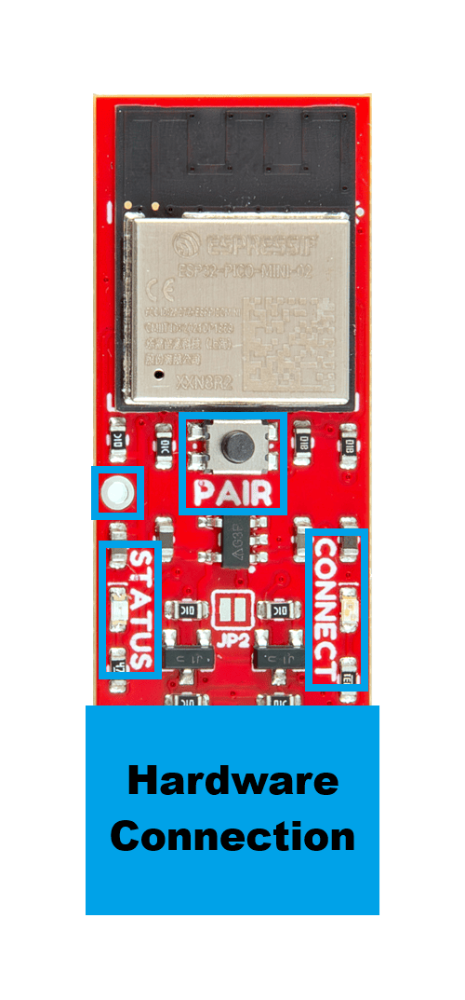

| ESP32 Pins | BlueSMiRF |
|---|---|
EN |
RST PTH Pad |
GPIO 0 |
Pair Button |
GPIO 1 |
TX Pin |
GPIO 3 |
RX Pin |
GPIO 8 |
STATUS LED |
GPIO 13 |
CONNECT LED |
GPIO 15 |
Disables Debug |
GPIO 19 |
CTS Pin |
GPIO 22 |
RTS Pin |
Firmware
Firmware
The BlueSMiRF v2 comes pre-programmed with the latest version of our open-source firmware. However, users are free to modify the firmware and/or reprogram their board for their purposes.
Our firmware provides short-range, point-to-point communication; allowing serial UART data to be transmitted between two Bluetooth devices. It includes support for both the SPP and BLE protocols and features a massive >10kB buffer for each RX and TX channel to compensate for transmission delays. The firmware also offers a set of AT-commands to configure the BlueSMiRF v2's settings: including the baud rate, flow control, LED mode, and Over-The-Air (OTA) updates over a 2.4GHz WiFi network to name a few.
- Serial Bluetooth® Point-to-Point Communication
- Bluetooth Protocols Supported
- Serial Port Profile (SPP)
- Bluetooth Low Energy (BLE)
- Firmware Over-the-Air (OTA) Updates via 2.4GHz WiFi
Bluetooth Protocols
While Bluetooth Classic (Serial Port Profile or "SPP") is the primary communication protocol, which makes it highly compatible with Android devices and most computers, the BlueSMiRF v2 also supports Bluetooth Low Energy (BLE) protocol for connecting with Apple devices and other low-power devices.
Performance
Testing a pair of BlueSMiRF v2s and we were able to achieve a range of ~110 feet (~33m) in the SparkFun building.
Bootloader Mode
Users can manually force the ESP32 into the serial bootloader mode with the PAIR button, to upload new firmware to the BlueSMiRF v2. Please, refer to the PAIR Button section below for more information.
Programming the ESP32 in Arduino
To program the ESP32 Pico-Mini module in the Arduino IDE, users should select the ESP32 > ESP32 Dev Module from the Board Manager list. Users should also be aware that not all of the capabilities, listed above, are available in the Arduino IDE; the Espressif IDF should be utilized for the full capabilities of the ESP32. When programming the module with the Arduino IDE, only the following peripherals are supported:
- Only two UART interfaces are available.
- Only one SPI bus is defined.
- Only one I2C bus is defined.
For more technical specifications on the I/O pins, you can refer to the schematics, ESP32 Pico-Mini module datasheet, ESP32 SoC datasheet, and documentation for the ESP32 Arduino core.
Any of the GPIO pins of the ESP32 module can function as digital pins. In the Arduino IDE, users will need to declare the pinMode() function for the pins used in this manner, in the setup of their sketch.
-
Input
When configured properly, an input pin will be looking for a
HIGHorLOWstate. This functionality is accessed in the Arduino IDE using thedigitalRead(pin)function. By default, in the Arduino IDE,digitalRead()returns a boolean value. Input pins are high impedance and takes very little current to move the input pin from one state to another. -
Output
When configured as an output the pin will be at a
HIGHorLOWvoltage. This functionality is accessed in the Arduino IDE using thedigitalWrite(pin, value)function. Output pins are low impedance; this means that they can provide a relatively substantial amount of current to other circuits.
The ESP32 module provides a 12-bit ADC (Analog Digital Converters) input on eighteen of its I/O pins. This functionality is accessed in the Arduino IDE using the analogRead(pin) function. By default, in the Arduino IDE, analogRead() returns a 10-bit value. To change the resolution of the value returned by the analogRead() function, use the analogReadResolution(bits) function.
The ESP32 module supports up to sixteen channels of 20-bit PWM (Pulse Width Modulation) outputs on any of its I/O pins. This is accessed in the Arduino IDE using the analogWrite(pin, value) function. By default, in the Arduino IDE, analogWrite() accepts an 8-bit value. To change the resolution of the PWM signal for the analogWrite() function, use the analogWriteResolution(bits) function.
The ESP32 module supports up to two 8-bit DAC (Digital Analog Converters) outputs. This is accessed in the Arduino IDE using the dacWrite(pin, value); function. By default, in the Arduino IDE, the ESP32 Dev Module board definition supports:
| DAC1 | GPIO 25 |
|---|---|
| DAC2 | GPIO 26 |
The ESP32 module provides three UART ports. By default, the UART ports for Serial and Serial1 can be accessed through the Arduino IDE using the serial communication class. By default, in the Arduino IDE, the ESP32 Dev Module board definition supports:
-
SerialUART Port
RX0 GPIO 1TX0 GPIO 3 -
Serial1UART Port
RX1 GPIO 21TX1 GPIO 22
Tip
We have noticed that with the ESP32 Arduino core, Serial.available() does not operate instantaneously. This is due to an interrupt triggered by the UART, to empty the FIFO when the RX pin is inactive for two byte periods:
-
At 9600 baud,
hwAvailabletakes about 11 ms before the UART indicates that data was received from:\r\nERROR\r\n.\[ (bytes + 2) * 1ms = 11ms \] -
At 115200 baud,
hwAvailabletakes about 1 ms before the UART indicates that data was received from:\r\nERROR\r\n.\[ (bytes + 2) * .087ms = 1ms \]
For more information, please refer to this chatroom discussion.
The ESP32 module provides three SPI buses. By default, in the Arduino IDE, the SPI class is configured to utilize pins GPIO 32 (SCK), GPIO 25 (POCI), GPIO 26 (PICO), and GPIO 27 (SS) for its chip select. In order to utilize the other SPI ports or objects, users will need to create a custom SPI object and declare which pins to access. By default, in the Arduino IDE, the ESP32 Dev Module board definition supports:
| SCK | GPIO 32 (SCK) |
|---|---|
| SDI or POCI | GPIO 25 (MISO) |
| SDO or PICO | GPIO 26 (MOSI) |
| CS* | GPIO 27 (SS) |
Signal Nomenclature
To comply with the latest OSHW design practices, we have adopted the new SPI signal nomenclature (SDO/SDI and PICO/POCI). The terms Master and Slave are now referred to as Controller and Peripheral. The MOSI signal on a controller has been replaced with SDO or PICO. Please refer to this announcement on the decision to deprecate the MOSI/MISO terminology and transition to the SDO/SDI naming convention.
The ESP32 module module can support up to two I2C buses. By default, in the Arduino IDE, the Wire class is configured to utilize pins GPIO 20 (SDA) and GPIO 7 (SCL). In order to utilize another I2C port, users will need to create a custom Wire object and declare which pins to access. By default, in the Arduino IDE, the ESP32 Dev Module board definition supports:
| SCL0 | GPIO 7 (SCL) |
|---|---|
| SDA0 | GPIO 20 (SDA) |
Hardware Connection
Each variant of the BlueSMiRF v2, has a different hardware connection option. Users can purchase a board variant with either PTH pads, male header pins, or JST-GH connector to suite their needs.

The hardware connection on the BlueSMiRF v2.
The connection options for the board variants: (from left; to right)
PTH pads, male header pins, or JST-GH connector.
The pin layout for these connections, are summarized in the table below. The pin numbers are ordered from left-to-right, as viewed from the side facing the connection.

| Connection Type | 1(Left) |
2 |
3 |
4 |
5 |
6(Right) |
|---|---|---|---|---|---|---|
| PTH Pads Male Header Pins |
GND |
CTS |
VCC |
TXO |
RXI |
RTS |
| JST Connector | VCC |
RXI |
TXO |
CTS |
RTS |
GND |
Backwards Compatibility
The pin layout of the BlueSMiRF v2 variants with the PTH pads and male header pins, will only be backwards compatible with previous versions of the BlueSMiRF Mate, as shown in the image below.
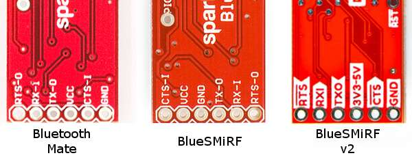

Power Pins
The BlueSMiRF v2 only requires 3.3V and is powered through the VCC and GND pins of its hardware connection.

The power pins from the BlueSMiRF v2's hardware connection.
Below, is a general summary of the power circuitry:
VCC- The input voltage for the BlueSMiRF v2, provided from its hardware connection- Supplies the AP2112 LDO regulator
- Input Voltage Range: 3.3 to 6.0V (1)
- Powers the ESP32 module, LEDs, and lower voltage of the logic-level shifters
- The voltage regulator can be bypassed with the
JP2jumper
- Supplies the AP2112 LDO regulator
GND- The common ground or the 0V reference for the voltage supplies.
- While the input voltage range for the AP2112 LDO voltage regulator is 2.5 to 6.0V, we recommend a minimum input voltage of 3.3V to prevent the ESP32 module browning out.
Power Consumption
The board's power consumption is based on its operation. Here are some of estimates based on our measurements at 3.3V.
- Idle: 72mA / 238mW
- Connected with No Traffic: 75mA / 248mW
- Connected with Duplex Traffic: 140mA / 462mW
Info
For more details, users can reference the schematics and the datasheets of the individual components on the board.
UART Interface
The UART interface provides access to the primary function of the BlueSMiRF v2. It supports full-duplex data transmission for baud rates ranging between 2400-921600bps.

The pins of the UART interface for the BlueSMiRF v2.
| Device 1 | RX |
TX |
CTS |
RTS |
|---|---|---|---|---|
| Device 2 | TX |
RX |
RTS |
CTS |
The UART signals cross-coupled between two devices
Below, is a general summary of the UART interface:
-
Data Bus
- Features logic-level converters; the higher voltage is supplied by
VCC - Full-duplex support (simultaneous/bidirectional communication)
RXI- Data input to the BlueSMiRF v2 from its hardware connection- If connected, data received from the
RXIpin is piped to its Bluetooth connection - Buffer Size: 51kB
- If connected, data received from the
TXO- Data output from the BlueSMiRF v2 to its hardware connection- If connected, data received from the Bluetooth connection is piped to its
TXOpin - Buffer Size: 10kB
- If connected, data received from the Bluetooth connection is piped to its
Info
By default, the baud rate is configured to 115200bps. Use the
AT-SerialSpeedcommand to change this setting. - Features logic-level converters; the higher voltage is supplied by
-
Flow Control (Optional)
- Direct connection to GPIO; no logic-level conversion
- Does not support legacy hardware flow control for DTE (Data Terminal Equipment) and DCE (Data Communications Equipment)
CTS- Connected device, controls data transmission from BlueSMiRF v2HIGH: Connected device, signaling that it is ready for data to be sentLOW: Connected device, signaling that the data transmission needs to be halted
RTS- Controls data transmission to the BlueSMiRF v2HIGH: BlueSMiRF v2 is ready for data to be transmitted to itLOW: BlueSMiRF v2 buffer is full; assertsLOWto halt data transmission
Info
By default, the flow control pins are disabled in the firmware. Use the
AT-FlowControl=1command to enable them.Tip
The flow control pins aren't necessary for the BlueSMiRF v2 to function. However, when enabled, it assists with buffer control, device latency, and data synchronization.
Tip
These data bus and flow control signals need to be cross-coupled between the two devices.
Pair Button
The PAIR button is used to switch between the various modes of operation for the BlueSMiRF v2. It is used to simplify pairing, triggering various modes of operation, and restoring the settings to their factory defaults.

PAIR Button on the BlueSMiRF v2.
- Discoverable Mode
- A default state, where the
STATUSLED will fade in-and-out a few times to indicate the device is ready to be paired with a Bluetooth device.
- A default state, where the
- BlueSMiRF Pairing Mode
- Used to pair the BlueSMiRF v2 with another BlueSMiRF v2 in the (default) discoverable mode.
- Press and hold the PAIR button down for 4 - 8sec, the
CONNECTandSTATUSLED will blink back-and-forth.- If the PAIR button is continued to be held, the device will transition to a factory reset (see below).
- If the BlueSMiRF v2 hasn't been discovered or paired with the other BlueSMiRF v2 after a few seconds, it will return to the (default) discoverable mode and the
STATUSLED will fade in-and-out a few times to indicate the transition.
- Bootloader Mode
- Used to manually update the firmware through the UART interface.
- To enter bootloader mode, users will need to hold down the PAIR button while the BlueSMiRF v2 is not powered.
- Continue holding down the PAIR button, while applying power to put the microcontroller into bootloader mode.
- Release the button, to upload new firmware.
- Factory Reset
- Press and hold the PAIR button down for more than 8sec, the
CONNECTandSTATUSLED will blink back-and-forth, rapidly. - Once the user releases the button, the original factory settings are be applied and the BlueSMiRF v2 resets. Then, it returns to the (default) discoverable mode.
- Press and hold the PAIR button down for more than 8sec, the
LEDs
The BlueSMiRF v2 has two status LEDs, which function differently based on the Bluetooth connection and/or datastream status; in conjunction with the device's AT-LedStyle configuration setting and operation mode:

The status indication LEDs on the BlueSMiRF v2.
-
Normal Operation
Setting:
AT-LedStyle=0(Default)CONNECT- Indicates the Bluetooth connection status- Discoverable Mode: This LED will blink, while the BlueSMiRF v2 is available to be paired with.
- Active Connection: This LED will turn solid, once the BlueSMiRF v2 has an active Bluetooth connection
STATUS- Indicates the status of the UART datastream- Data Transmission: The
STATUSLED will blink, as data is sent to the BlueSMiRF v2.
- Data Transmission: The
Setting:
AT-LedStyle=1CONNECT- Indicates the Bluetooth connection status and the status of theTXOdatastream- Discoverable Mode: This LED will blink, regularly, while the BlueSMiRF v2 awaits for an active Bluetooth connection.
- Active Connection
- Initial Connection: Upon an initial connection, this LED will remain solid until data is passed through the
TXOpin of the BlueSMiRF v2. - Data Transmission: This LED will blink as data is passed through the
TXOpin of the BlueSMiRF v2.
- Initial Connection: Upon an initial connection, this LED will remain solid until data is passed through the
STATUS- Indicates the status of theRXIdatastream- Data Transmission: This LED will blink, as data is passed through the
RXIpin of the BlueSMiRF v2; regardless of the Bluetooth connection status.
- Data Transmission: This LED will blink, as data is passed through the
-
Pairing Mode
- After the PAIR button has been held down for 4-8sec, the
CONNECTandSTATUSLED will blink back-and-forth.- If the PAIR button is continued to be held, the device will transition to a factory reset (see below).
- After a few seconds in pairing mode, if the BlueSMiRF v2 hasn't been paired with, it will return to the (configured) discoverable mode and the
STATUSLED will fade in-and-out a few times to indicate the transition.
- After the PAIR button has been held down for 4-8sec, the
- Factory Reset
- After the PAIR button has been held down past 8sec sec, the
CONNECTandSTATUSLED will blink back-and-forth, rapidly. - Once the user releases the button, the original factory settings are be applied and the BlueSMiRF v2 resets. Then, it returns to the (default) discoverable mode.
- After the PAIR button has been held down past 8sec sec, the
- Command Mode
- Upon entering command mode, the
CONNECTandSTATUSLED will blink simultaneously. -
After an AT-command has been initially sent sent:
Setting:
AT-LedStyle=0(Default)The LEDs will then return to functioning in the (default) normal operation.
Setting:
AT-LedStyle=1The LEDs will continue to blink simultaneously.
- Upon entering command mode, the
Reset Pin
The reset pin for the ESP32 is connected to the RST PTH pad. Pulling this pin LOW will restart the ESP32.

The reset PTH pad on the BlueSMiRF v2.
Tip
This is primarily provided for our production team, as a test point for programming and testing the board. However, users can use it when reprogramming the ESP32 microcontroller.
Jumpers
Never modified a jumper before?
Check out our Jumper Pads and PCB Traces tutorial for a quick introduction!
-
How to Work with Jumper Pads and PCB Traces
There are two jumpers on these board that can be used to easily modify the hardware connections.
JP2-
This jumper can be closed to bypass the 3.3V voltage regulator; directly passing power from the
VCCpin to all the components on the3V3power rail.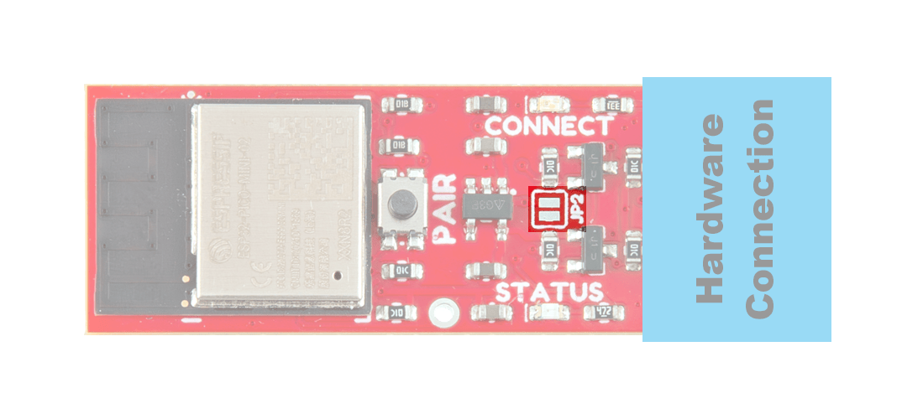
The JP2jumper on the top of the BlueSMiRF v2.Danger
Please be aware of the voltage ratings for all the components, before proceeding with this modification. Exceeding the electrical specifications of certain components will permanently damage and/or disable them.
BTN-
This jumper can be cut to disconnect the PAIR button from the
GPIO 0pin of the ESP32.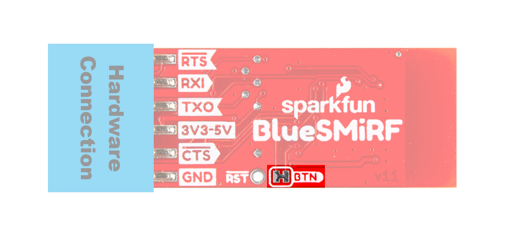
The BTNjumper on the bottom of the BlueSMiRF v2.


Hardware Assembly
General Connection
For a connection between two UART interfaces, the data and flow-control signals are cross-coupled. In addition, power must also be supplied to the BlueSMiRF v2.
| Device 1 | RX |
TX |
|---|---|---|
| Device 2 | TX |
RX |
UART data bus only
| Device 1 | RX |
TX |
CTS |
RTS |
|---|---|---|---|---|
| Device 2 | TX |
RX |
RTS |
CTS |
UART with flow control
JST Connector
In most circumstances, users will utilize the JST connector to interface with one of our high-precision GNSS breakout boards for RTK correction data. However, users can also use the JST breadboard cable to connect the BlueSMiRF v2 - JST to other boards.

Connecting to an All-band GNSS RTK board with a JST adapter cable.
Compatibility - JST Connections
The simplest way to connect the BlueSMiRF to most of our GNSS breakout boards, is with our JST adapter cables:
Unfortunately, when we designed some of our earlier GNSS boards/products, the pin layout of the JST connection wasn't been standardized yet. Therefore, users will need to verify that the pin layout of the GNSS breakout board's JST connector is compatibile with our adapter cables.
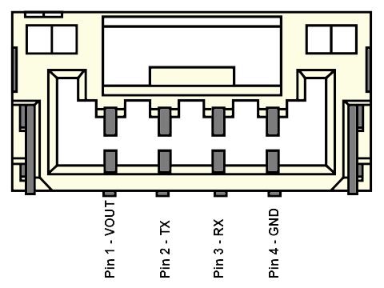

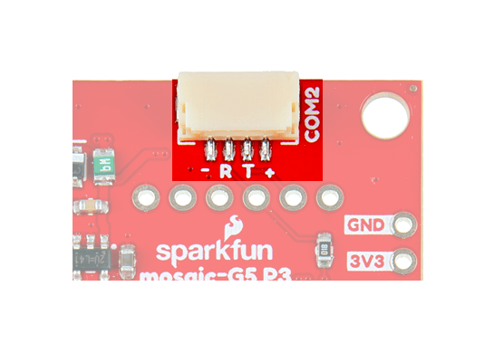

| Pin Number | 1(Left) | 2
| 3
| 4(Right) |
|---|---|---|---|---|
| Label | +, V, etc. |
T, TX, etc. |
R, RX, etc. |
-, G, etc. |
| Function | Voltage Output 3.3 to 5V |
UART Transmit |
UART Receive |
Ground |

Connecting to the Serial Basic breakout with a JST breadboard cable.
Pin Layout - BlueSMiRF
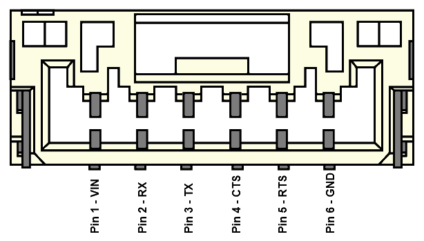

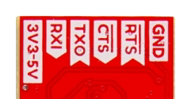

| Pin Number | 1(Left) |
2 |
3 |
4 |
5 |
6(Right) |
|---|---|---|---|---|---|---|
| Label | 3V3-5V |
RXI |
TXO |
CTS |
RTS |
GND |
| Function |
Voltage Input 3.3 to 5V |
UART Receive |
UART Transmit |
Flow Control Clear-to-Send |
Flow Control Ready-to-Send |
Ground |
Male Header Pins
The pins of the BlueSMiRF v2 - Male Header are broken out into 0.1"-spaced male header pins on the outer edges of the board. In most circumstances, users will simply connect the BlueSMiRF v2 to the female headers of another board or utilize jumper wires to make the connection.

Connecting to a header on the All-band GNSS RTK breakout board.

Connecting to the Serial Basic breakout with jumper wires.
Pin Layout - BlueSMiRF
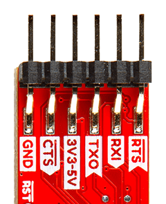

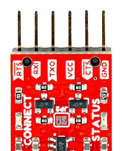

| Pin Number | 1(Left) |
2 |
3 |
4 |
5 |
6(Right) |
|---|---|---|---|---|---|---|
| Label | GND |
CTS |
Top: VCCBottom: 3V3-5V |
TXO |
RXI |
RTS |
| Function | Ground | Flow Control Clear-to-Send |
Voltage Input 3.3 to 5V |
UART Transmit |
UART Receive |
Flow Control Ready-to-Send |
PTH Pads
The PTH pads of the BlueSMiRF v2 - PTH Pins are broken out into 0.1"-spaced holes on the outer edges of the board.
New to soldering?
If you have never soldered before or need a quick refresher, check out our How to Solder: Through-Hole Soldering guide.
-
How to Solder: Through-Hole Soldering
Headers
When selecting headers, be sure you are aware of the functionality you require.

Soldering headers to the All-band GNSS RTK breakout board.

Pin Layout - BlueSMiRF
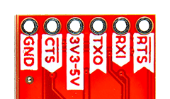

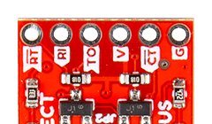

| Pin Number | 1(Left) |
2 |
3 |
4 |
5 |
6(Right) |
|---|---|---|---|---|---|---|
| Label | Top: GBottom: GND |
Top: CTBottom: CTS |
Top: VBottom: 3V3-5V |
Top: TOBottom: TXO |
Top: RIBottom: RXI |
Top: RTBottom: RTS |
| Function | Ground | Flow Control Clear-to-Send |
Voltage Input 3.3 to 5V |
UART Transmit |
UART Receive |
Flow Control Ready-to-Send |
Button Operation
PAIR Button on the BlueSMiRF v2.
The PAIR button on the BlueSMiRF v2 is used to enter a few different states:
- Discoverable Mode
- A default state, where the device is ready to be paired with a Bluetooth device.
- BlueSMiRF Pairing Mode
- Used to pair the BlueSMiRF v2 with another BlueSMiRF v2 in the (default) discoverable mode.
- Bootloader Mode
- Used to manually update the firmware through the UART interface.
- Factory Reset
- Forces the BlueSMiRF v2 to return to its original factory settings. Then, it returns to the (default) discoverable mode.
Create a Serial Link
In its default configuration, users can simply scan for and connect to the BlueSMiRF v2, from their phone or a laptop using a Bluetooth connection. However, for a serial bridge between two BlueSMiRF v2 boards, one board needs to be in discoverable mode, before the other device enters pairing mode and creates their connection.
- Device 1: By default, the device be in discoverable mode and be available for pairing.
- Device 1 will broadcast the name
BlueSMiRF-Pairingand wait for an incoming connection.
- Device 1 will broadcast the name
- Device 2: Hold the PAIR button for 4 to 8 seconds, then release.
- Device 2: Will then enter pairing mode and scan for any compatible devices to pair with.
- The scan should find that Device 1 is in discoverable mode broadcasting the
BlueSMiRF-Pairingname.
- The scan should find that Device 1 is in discoverable mode broadcasting the
- Device 2: Connects to Device 1
- Device 2 stores the MAC address of Device 1
- Whenever Device 2 boots up, it will always try to connect to the stored the MAC address (i.e. Device 1).
- Device 1: Remains agnostic of any connections or pairing; no MAC address has been stored on it.
- When Device 1 boots, it will not attempt to connect to any devices.
Note
The BlueSMiRF that was detected (Device 1), does not store the MAC address of the pairing BlueSMiRF (Device 2). Upon restart, the BlueSMiRF (Device 1) will return to the (default) discoverable mode.
Discoverable Mode
A default state, where the device will broadcast the name BlueSMiRF-Pairing, blink the Connect LED slowly, and wait for an incoming connection.
To enter discoverable mode:
- With no other BlueSMiRF devices in discoverable mode, hold the PAIR button down
- Wait (~4-8 seconds) until the
StatusandConnectLEDs to slowly blink back and forth - Release the PAIR button
- The BlueSMiRF v2 will enter pairing mode and scan for available devices it can connect to
- After a few seconds, if it has failed to connect with another device, the board will return to its discoverable mode
- In this mode, the
ConnectLED will slowly blink
- In this mode, the
Note
When the BlueSMiRF's connection is paired by another device, it does not store the MAC address of the connecting device; nor will it attempt to restore that connection upon restart.
BlueSMiRF Pairing Mode
Pairing mode is used to scan and connect to other BlueSMiRF v2 devices in discoverable mode.

GIF Setting BlueSMiRF v2 in Pairing Mode
To enter pairing mode:
- Hold the PAIR button down
- Wait (~4-8 seconds) until the
StatusandConnectLEDs to slowly blink back and forth - Release the PAIR button
Once a BlueSMiRF has entered pairing mode, it will scan for other compatible BlueSMiRF devices broadcasting the BlueSMiRF-Pairing name. If a device is detected, it will connect to the device and store the MAC address of the located device so that it can reconnect to the same device in the future. Otherwise, if no device is found after a few seconds, the BlueSMiRF will return to its discoverable mode.
Bootloader Mode
Hold down the PAIR button while the BlueSMiRF v2 is not powered. Applying power will set the microcontroller to bootloader mode; the STATUS LED should also be dimmed. After uploading the firmware binaries to the ESP32, you will need to cycle power to the device, as it does not automatically hard reset.

GIF Setting the BlueSMiRF in Bootloader Mode
Tip
To automatically enable a hard reset, users can connect the DTR pin of USB-to-serial converter to the RST PTH pad of the BlueSMiRF with a IC Hook with Pigtail.
Factory Reset
Holding the PAIR button for more than 8 seconds will cause the Status and Connect LEDs to quickly blink back and forth. If the PAIR button is released at this time, the device settings will be restored to their factory defaults.

GIF Factory Reset
Configuration Settings
Command Mode
Similar to the previous versions of the BlueSMiRF, all communication with the device is retransmitted between its Bluetooth serial link and UART interface. To configure the device, you must send a command key within the first 60 seconds after power-on or reset. This will trigger the device to pause the datastream and enter command mode, where the device settings can be configured using a set of AT-commands.
Command Key
- UART Interface:
$$$ - Bluetooth Serial Link:
+++(remote access)
Tip
The settings of the command key can be reconfigured with the following commands:
AT-BluetoothEscapeCharacterAT-EscapeCharacterAT-EscapeCharacterCountAT-MaxCommandTimeMs- By default, the command key can only be sent during the first 60 seconds after powering or resetting the device.
Once the BlueSMiRF v2 recognizes the command key, it responds with OK; and the CONNECT and STATUS LEDs will blink together. AT-commands must be sent one at a time, each ending with a carriage return (Enter). The device will echo the AT-command and return OK on success, or ERROR if the input is invalid.

Response acknowledging user is in command mode.
Note
Depending on your serial terminal's settings, you may not see the characters that are being sent. You can try turning on the local echo to view the characters. However, keep in mind that any characters sent when the BlueSMiRF v2 is in command mode will already be echoed back.
AT-Commands
Below is a full list of the available AT-commands. The AT-commands and parameter names are not case sensitive, but parameter values are. This distinction is important when configuring the device settings, such as the WiFi SSID and password.
| AT Command | Command Description |
|---|---|
$$$ |
Enter Command Mode - Hardware connection |
+++ |
Enter Command Mode - Bluetooth connection |
AT |
Reports OK |
AT? |
Display this help text |
ATA |
Display all settings |
ATB |
Display Bluetooth settings |
ATC |
Check for new firmware |
ATD |
Display the debug settings |
ATF |
Restore factory settings |
ATM |
Display MAC address |
ATP |
Start pairing process |
ATS |
Display serial settings |
ATU |
Update Firmware |
ATV |
Display firmware version |
ATW |
Save current settings to NVM |
ATX |
Exit command mode |
ATY |
Display system settings |
ATZ |
Reboot the system |
AT-<Param>=<value> |
Set parameter's value to xxx by name (Param) |
AT-<Param> |
Print parameter's current value by name (Param) |
Parameters
The parameters <Param> are used to query and configure specific device settings. Sending the AT-<Param> AT-command without a value, will querry the device setting and respond with the current value followed by an OK. Meanwhile, a parameter's value is configured by sending AT-<Param>=<value> AT-command. Use the ATW AT-command to store the new value in NVM (non-volatile memory).
Example
The first command sets the Bluetooth broadcast name, the second reads it back, ATW saves the changed settings to non-volatile memory (NVM), and ATX exits command mode.
These parameters are best discussed in groups:
Bluetooth Parameters
Below is a table of AT-commands used to query or configure the Bluetooth parameters, a short description of the commands, and its factory default value (if applicable). Right after the table, there is also a list which provides a detailed explanation of each parameters' effect on the device settings.
| AT Command | Command Description | Factory Default Value |
|---|---|---|
AT-BluetoothConnectRetries |
Number of retries of a paired connection | 5 |
AT-BluetoothConnectTimeoutMs |
Milliseconds before a paired connection attempt times out | 3000 |
AT-BluetoothEscapeCharacter |
The character received from the remote system, sought to enter command mode | + |
AT-BluetoothNickname |
User configurable name to broadcast over Bluetooth during discovery | BlueSMiRF-ABCD, where ABCD is the last four digits of the MAC address |
AT-BluetoothPairedMac |
MAC address of the unit that the user wants to connect to at startup | |
AT-BluetoothPairedName |
Name of the unit that the user wants to connect to at startup | |
AT-BluetoothPin |
Pin to enter during pairing - only required for older Bluetooth devices | 1234 |
AT-BluetoothRxSize |
Bluetooth receive buffer size | 2048 |
AT-BluetoothTxSize |
Bluetooth write buffer size | 1024 |
AT-BluetoothType |
Bluetooth protocol used for communication | 0 |
-
- BluetoothConnectRetries
- If this device has a paired MAC or name, at power up it will attempt to connect to this paired device. A connection is not guaranteed, and the connection will be re-tried this number of times before going into passive, discoverable mode.
-
- BluetoothConnectTimeoutMs
- When this device is connecting to a paired device, if this number of milliseconds expires before a connection is made, the device will attempt to reconnect to the paired device.
-
- BluetoothEscapeCharacter
- This is the character that must be transmitted by a remote device to enter command mode remotely over the Bluetooth connection.
Note
Escape characters are ignored after
MaxCommandTimeMsnumber of milliseconds and withinMinEscapeTimeMsof other incoming characters. -
- BluetoothNickname
- The name that is broadcast when other devices are scanning for devices to pair to.
-
- BluetoothPairedMac
- The MAC address of the BlueSMiRF that this device should pair to at power-on. Use the
ATMcommand on the remote device to display its MAC address. This command is not normally used; use the button pairing method for an easier way to pair two devices.
-
- BluetoothPairedName
- The name of the BlueSMiRF that this device should pair to at power-on. Use the
BluetoothNicknamecommand on the remote device to change its paired name. This command is not normally used; use the button pairing method for an easier way to pair two devices.
-
- BluetoothPin
- The pin that is needed during pairing. Only needed on very old Bluetooth USB dongles.
-
- BluetoothRxSize
- The size of the Bluetooth receive buffer. Increase if a large amount of data is coming into the BlueSMiRF over Bluetooth, before the speed of the serial interface can output it.
-
- BluetoothTxSize
- The size of the Bluetooth transmit buffer. Increase if a large amount of data needs to be transmitted over Bluetooth but the connection between devices is poor and multiple retransmissions occur.
-
- BluetoothType
- Controls the Bluetooth protocol. This parameter accepts a
0,1, and2for the Bluetooth Protocol as listed below. Note that only the SPP protocol supports pairing.
- Protocol
0= Serial Port Profile (SPP) - Protocol
1= Bluetooth Low-Energy (BLE) - Protocol
2= Radio off
Serial Parameters
Below is a table of AT-commands used to query or configure the serial parameters, a short description of the commands, and its factory default value (if applicable). Right after the table, there is also a list which provides a detailed explanation of each parameters' effect on the device settings.
| AT Command | Command Description | Factory Default Value |
|---|---|---|
AT-FlowControl |
Enable the use of CTS/RTS flow control signals | 0 |
AT-InvertCts |
Invert the input of CTS | 0 |
AT-InvertRts |
Invert the output of RTS | 0 |
AT-PartialFrameTimeoutMs |
Send partial buffer if time expires | 50 |
AT-RtsStartSendingPercent |
Percent of serialReceiveBuffer that is free when RTS is asserted | 25 |
AT-RtsStopSendingPercent |
Percent of serialReceiveBuffer that is free when RTS is deasserted | 5 |
AT-SerialReceiveBufferSize |
Serial receive buffer size | 51200 |
AT-SerialSpeed |
The baud rate that the BlueSMiRF operates at. | 115200 |
AT-SerialTransmitBufferSize |
Buffer size to receive bytes from Bluetooth | 10240 |
-
- FlowControl
- If flow control is enabled, the BlueSMiRF v2 will send data when its CTS pin is driven low (the host system is telling the radio to transmit). If flow control is enabled, BlueSMiRF v2 will drive its RTS low if its serial buffer is full (the radio is telling the host system to hold its horses). By default, flow control is turned off.
-
- InvertCts
- By default, InvertCts is false and CTS is high when data is allowed to flow. Enable InvertCts to do the opposite.
-
- InvertRts
- By default, InvertRts is false and RTS is high when data is allowed to flow. Enable InvertRts to do the opposite.
-
- PartialFrameTimeoutMs
- The number of milliseconds of timeout before a partial packet is sent. For example, if a partial frame of 12 bytes is received, the radio will wait this amount for more bytes before initiating a transmission.
-
- RtsStartSendingPercent
- Percent of serialReceiveBuffer that is free when RTS is asserted. Default of 25% of serialReceiveBuffer.
-
- RtsStopSendingPercent
- Percent of serialReceiveBuffer that is free when RTS is deasserted. Default of 5% of serialReceiveBuffer.
-
- SerialReceiveBufferSize
- Buffer size to receive serial data from the serial port, to be sent over Bluetooth. The default is 51200.
-
- SerialSpeed
- The baud rate that the BlueSMiRF operates at. Discrete values 2400, 4800, 9600, 14400, 19200, 38400, 57600, 115200 (default), 230400, 460800, and 921600bps are allowed.
-
- SerialTransmitBufferSize
- Buffer size to receive bytes from Bluetooth, waiting to be printed out the UART. The default is 10240.
System Parameters
Below is a table of AT-commands used to query or configure the system parameters, a short description of the commands, and its factory default value (if applicable). Right after the table, there is also a list which provides a detailed explanation of each parameters' effect on the device settings.
| AT Command | Command Description | Factory Default Value |
|---|---|---|
AT-EscapeCharacter |
The character sought to enter command mode | $ |
AT-EscapeCharacterCount |
The number of escape characters required to enter command mode | 3 |
AT-LedStyle |
Controls the behavior of the Status and Connect LEDs | 0 |
AT-MaxCommandTimeMs |
After this time in milliseconds, command mode cannot be entered | 60000 |
AT-MinEscapeTimeMs |
Serial traffic must stop this amount of milliseconds before an escape character is recognized | 2000 |
AT-PSRAMThreshold |
Use PSRAM for memory requests larger than this number of bytes | 1000 |
AT-WiFiPassword |
Password for the SSID, used for over-the-air-updates | |
AT-WiFiSSID |
SSID used for over-the-air-updates |
Warning
The ESP32 Pico-Mini is only compatible with 2.4GHz WiFi networks; it will not work on the 5GHz bands.
-
- EscapeCharacter
- The character that must be entered a number of times (
EscapeCharacterCount) to enter configuration mode. An escape character must be entered before the max time ofMaxCommandTimeMsand afterMinEscapeTimeMs.
-
- EscapeCharacterCount
- The number of escape characters needed before command mode is entered. Set to 0 to disable.
-
- LedStyle
- Modes of how the LEDs behave:
-
0- CLASSIC (default): The STATUS LED blinks with TX/RX traffic.
-
1- SERIAL_TRAFFIC: The CONNECT LED blinks with TX traffic and the STATUS LED blinks with RX traffic.
-
2- OFF: The CONNECT and STATUS LEDs are turned off.
-
- MaxCommandTimeMs
- Once this number of milliseconds has passed, command mode cannot be entered. This is used as a method to prevent a remote system from accidentally entering command mode.
-
- MinEscapeTimeMs
- This number of milliseconds must pass between the last serial character received and an escape character. This is used as a method to prevent a remote system from accidentally entering command mode.
-
- AT-PSRAMThreshold
- The memory threshold, before PSRAM is enabled
-
- WiFiPassword
- The password for the local WiFi; used for firmware updates.
-
- WiFiSSID
- The SSID for the local WiFi; used for firmware updates.
-
The ESP32 Pico-Mini is only compatible with 2.4GHz WiFi networks; it will not work on the 5GHz bands
Firmware Overview
The BlueSMiRF v2 comes pre-programmed with the latest version of our open-source firmware. However, users are free to modify the firmware and/or reprogram their board for their purposes.
Our firmware provides short-range, point-to-point communication; allowing serial UART data to be transmitted between two Bluetooth devices. It includes support for both the SPP and BLE protocols and features a massive >10kB buffer for each RX and TX channel to compensate for transmission delays. The firmware also offers a set of AT-commands to configure the BlueSMiRF v2's settings: including the baud rate, flow control, LED mode, and Over-The-Air (OTA) updates over a 2.4GHz WiFi network to name a few.
- Serial Bluetooth® Point-to-Point Communication
- Bluetooth Protocols Supported
- Serial Port Profile (SPP)
- Bluetooth Low Energy (BLE)
- Firmware Over-the-Air (OTA) Updates via 2.4GHz WiFi
Bluetooth Protocols
While Bluetooth Classic (Serial Port Profile or "SPP") is the primary communication protocol, which makes it highly compatible with Android devices and most computers, the BlueSMiRF v2 also supports Bluetooth Low Energy (BLE) protocol for connecting with Apple devices and other low-power devices.
Dependencies
For users looking to modify the firmware for their own use case, the following dependencies must be installed in the Arduino IDE:
- Arduino Core: esp32 v2.0.11
- Board Manager URL:
- Libraries:
- Bluetooth Serial: ESP32 Arduino core (built-in)
- ESP32-OTA-Pull: v1.0.0
- ESP32_BleSerial: v1.0.4
- JC_Button: v2.1.2
Info
For documentation on the Bluetooth Serial library that is built into the ESP32 Arduino core, please refer to Espressif's API guide.
Board Settings
To upload the firmware, users will need to compile and upload the firmware in the Arduino IDE with the following board settings:
- Board: ESP32 Dev Module
- Flash Size: 8MB
- Partition Scheme:
- Default: Use custom partition file named
BlueSMiRF_Partitions.csv- Partitions:
- app0 (0x3C0000): 3.9MB
- app1 (0x3C0000): 3.9MB
- spiffs (0x1000): 4096
- Partitions:
- Alternative: Built-in
Minimal SPIFFs (1.9MB APP with OTA)
- Default: Use custom partition file named
- PSRAM: Enabled
Bootloader Mode
Users can manually force the ESP32 into the serial bootloader mode with the PAIR button, to upload new firmware to the BlueSMiRF v2. Please, refer to the PAIR Button section below for more information.
Update Methods
From time to time, SparkFun will release new firmware for the BlueSMiRF v2 product line to add and improve functionality. For most users, firmware can be upgraded over a 2.4GHz WiFi network using the OTA method. Users can also update the firmware by manually reprogramming the device with the new firmware.
Over-The-Air (OTA)
Because it's much easier to use, we recommend this method. However, it does require an internet connection through your local WiFi network. Once the AT-WiFiSSID and AT-WiFiPassword settings have been entered for your local WiFi network, the ATC command can be issued to check for new firmware. If new firmware is available, send the ATU command to begin an update.
- Enter command mode:
- UART Interface:
$$$ - Bluetooth Serial Link:
+++(remote access)
- UART Interface:
- Configure the
AT-WiFiSSIDandAT-WiFiPasswordparameters for your local WiFi network - Save the new settings (
ATW) - Issue the
ATCcommand to check for new firmware. - If new firmware is available, send the
ATUcommand to begin an update. - The device will restart after the update process is complete
Example
Below, is an example of this method using the UART interface. In the example, the WiFi network's SSID is sparkfun-guest and its password is sparkfun6333. The highlighted lines represent the commands that were sent.
Terminal
BlueSMiRF-v1.0
$$$
OK
at-wifissid=sparkfun-guest
AT-WIFISSID=sparkfun-guest
OK
at-wifipassword=sparkfun6333
AT-WIFIPASSWORD=sparkfun6333
OK
atw
ATW
OK
atc
ATC
Connecting to sparkfun-guest...
Connected!
Checking to see if an update is available from https://raw.githubusercontent.com/sparkfun/SparkFun_BlueSMiRF-v2_Binaries/main/BlueSMiRF-Firmware.json
Current firmware version: v1.0
New firmware version available: 1.1
OK
atu
ATU
Connecting to sparkfun-guest...
Connected!
Getting new firmware
Installing new firmware
[ 0%
[ 1%
[ 2%
.
.
.
[=================== 99%
[==================== 100%
]
BlueSMiRF-v1.1
Manually Reprogramming
If for some reason the OTA method can't be used, users can also manually reprogram the microcontroller on the BlueSMiRF v2.
- Download the Firmware: Download and unzip the contents of the SparkFun_BlueSMiRF-v2_Binaries GitHub repository.
Download BlueSMiRF v2 Binaries GitHub Repo (ZIP) -
Connect Hardware: Wire the BlueSMiRF v2 to a USB-to-Serial converter, ensuring the TX and RX connections are crossed over. To automatically trigger a reset, connect the converter's
DTRpin to the BlueSMiRF v2'sRSTPTH pad.USB-to-Serial Converter BlueSMiRF v2 DTR RST (PTH Pad) RXI TXO RXI TXO 3V3 VCC GND GND